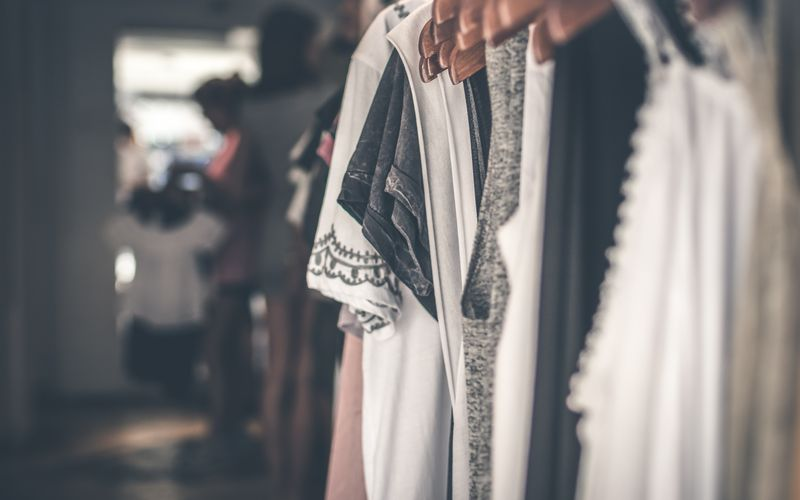
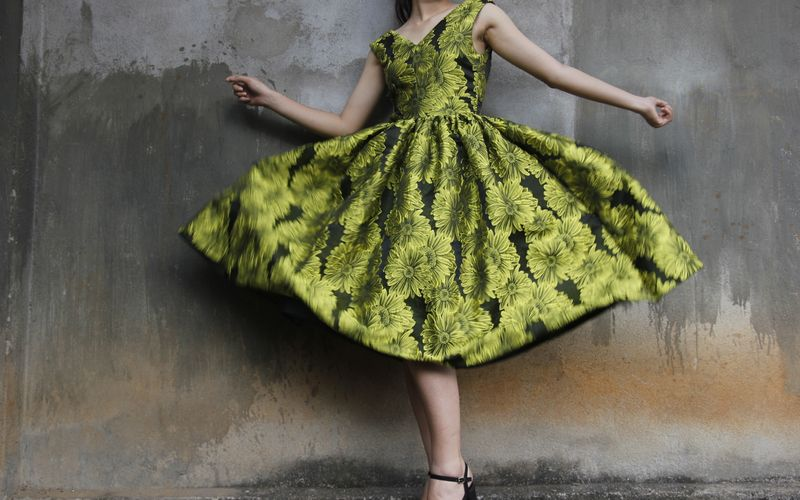

The Tuesday That Broke My Old System
I used to pack like I was leaving the country for a one-hour client meeting. Blazer option. Flat option. Heel option. Emergency top. By 6 p.m. my bag felt like a punishment. Then I bought one Dress from whistles on a tired Thursday, wore it straight into a Friday from hell, and somehow looked coherent from morning meetings to evening drinks without a full reset.
That sounds dramatic until you live it. The fabric held shape. The neckline survived a day of laptops and coffee steam. The hemline did not panic when I sat, stood, walked fast, then sat again. For the first time, my Wardrobe felt like it was working with me, not auditioning against me.
Morning Meetings: Less Costume, More Confidence
At 8:45 a.m., I kept it simple: the Dress, a structured blazer from the same whistles order, low heels, and the earrings I always reach for when I need to sound prepared before I actually am. Nobody asked if I had “dressed up.” They just listened, which is the real compliment in a meeting room.
What changed was not glamour. It was friction. I stopped doing the midday mirror negotiation where you wonder if you look too formal, too casual, too try-hard. One good Dress removed three decisions I used to make badly before lunch.

The Handover Hour: When the Day Turns Social
By 5:30 p.m., the office energy shifts. People speak in half sentences and full smiles. This is where most of my outfits used to fail. I would still look like I was waiting for a calendar invite. With this Whistles Dress, the handover was stupidly easy: blazer off, lip colour up, heel swap in the bathroom, done.
I am not claiming magic. I am claiming math. If one Dress can cross from spreadsheet tone to wine-bar tone, it deserves more respect than the five almost-right pieces collecting dust in my Wardrobe.
Evening Drinks Without a Full Outfit Reboot
At the bar, a friend said, “You look like you have plans.” I did, but they had not started when I left the house. That is the whole point of shopping whistles with intent: buy the version of yourself that already exists on busy days, not the fantasy version you meet once a year.

The soft sell is real but not loud. I did not need a campaign to convince me. I needed one wear-test on a chaotic day. After that, browsing Whistles stopped feeling like scrolling and started feeling like editing.
The New Wardrobe Rules I Actually Keep
Rule one: if it only works for one hour of the day, it is not a hero piece. Rule two: if it needs a full personality change at 6 p.m., it is not versatile, it is needy. Rule three: one excellent Dress beats three almost-right dresses every time.
Since that purchase, I have been ruthless with my Wardrobe. Fewer panic buys. More repeat wears. When I do add something from whistles, I ask one question: can this survive a real Tuesday, not just a styled photograph?
Closing Take
I did not need a new life. I needed a better formula. One Whistles Dress gave me a cleaner Wardrobe, a calmer morning, and an evening that did not require a rescue mission from my gym bag.
If your week also jumps from meetings to drinks with no gap in between, stop packing for two separate people. Start with one piece that can keep up. whistles got there before my old rules did.